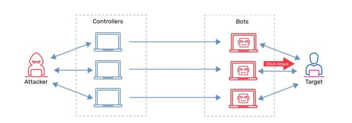
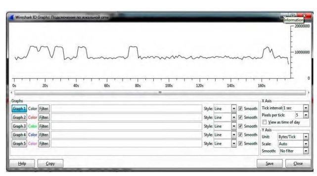
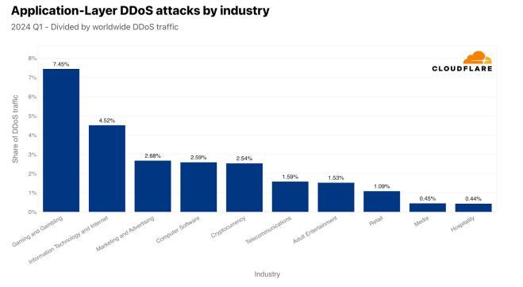

Актуальність теми
У сучасному цифровому середовищі кібербезпека набуває вирішального значення. Однією з найнебезпечніших та наймасштабніших загроз залишаються DDoS-атаки — навмисні дії з метою виведення з ладу інтернет-сервісів, шляхом перевантаження каналів зв'язку чи ресурсів обробки даних. Ці атаки є не лише технічною проблемою, а й інструментом політичного та економічного тиску.
Згідно зі звітами міжнародних аналітичних компаній (Arbor Networks, Cloudflare, Google), щороку фіксуються мільйони атак різного масштабу. Під ударом перебувають великі фінансові структури, державні установи, онлайн-магазини, а також критична інфраструктура.
Особливої актуальності тема набула в умовах війни в Україні, де державні та приватні сервіси постійно стають об'єктами атак хакерських угруповань. CERT-UA регулярно публікує попередження про хвилі DDoS-атак на портали електронного урядування, банки та логістичні ресурси.
Мета і завдання
Мета дипломної роботи полягає в дослідженні методів виявлення та протидії DDoS-атакам із застосуванням сучасних інструментів аналізу трафіку та алгоритмів машинного навчання. Серед основних завдань: детальне вивчення типів атак, огляд засобів захисту, практичне моделювання атаки та реалізація системи класифікації трафіку.
Дослідження передбачає аналіз підходів, які дозволяють виявляти ознаки аномального трафіку на ранніх етапах. Це досягається за рахунок побудови моделей поведінки нормального користувача, застосування кластеризації та багаторівневої фільтрації.
Типи DDoS-атак
Класифікація DDoS-атак базується на рівнях моделі OSI, зокрема:
- Атаки на мережевому рівні (Layer 3): ICMP Flood, Ping of Death.
- Атаки на транспортному рівні (Layer 4): SYN Flood, UDP Flood, TCP Reset.
- Атаки на рівні додатків (Layer 7): HTTP Flood, Slowloris, DNS Query Flood.

Окремо виокремлюються мультивекторні атаки, які поєднують декілька механізмів — наприклад, UDP Flood із SYN Flood. Також існують новітні загрози типу Low-and-Slow, де атака імітує поведінку легального користувача з метою обходу захисту.
Історичні приклади
У 2016 році хакерське угруповання використало ботнет Mirai для атаки на DNS-провайдера Dyn. Унаслідок цього стався масштабний збій роботи таких ресурсів як Twitter, Netflix, Reddit, GitHub.
У 2022 році Google зафіксував рекордну атаку на Cloud Armor — понад 46 мільйонів HTTPS-запитів/сек. У 2024 році український банк Monobank зазнав атаки потужністю 580 мільйонів запитів/хв. Ці кейси демонструють еволюцію і зростання потужностей ботнетів.
Етапи атаки
Класична структура DDoS-атаки включає:
- Розвідку та вибір цілі.
- Інфікування пристроїв та створення ботнету.
- Тестову атаку для перевірки доступності та захисту.
- Основну атаку (флудинг, перевантаження).
- Підтримання навантаження та обходи захисту.
Методи виявлення
Виявлення DDoS-атак здійснюється за допомогою різних методів: від простих сигнатурних систем до складних поведінкових моделей. Основними інструментами є системи виявлення вторгнень (IDS), моніторинг трафіку, алгоритми машинного навчання.

Сигнатурні методи порівнюють трафік з відомими шаблонами атак. Поведінкові — аналізують аномалії в мережевій активності. Також активно застосовуються метрики: середній час відповіді, кількість запитів за одиницю часу, частота з'єднань з одного IP тощо.
Серед інструментів: Snort, Suricata, Zeek, NetFlow. Також використовуються комерційні продукти — Arbor APS, Cisco Stealthwatch, Fortinet FortiDDoS.
Методи захисту
Захист від DDoS охоплює декілька рівнів:
- Інфраструктурний рівень: блокування трафіку за допомогою ACL, Blackhole Routing, Firewalls.
- Мережевий рівень: використання CDN, балансувальників навантаження, геофільтрації.
- Прикладний рівень: застосування WAF, CAPTCHA, rate limiting, обфускація URL.
Найбільш ефективними є хмарні сервіси захисту: Cloudflare, Akamai, Imperva, Radware. Вони забезпечують миттєве масштабування захисту та автоматичне розпізнавання шаблонів атак.

Кластеризація
Метод k-means — це один з найпопулярніших алгоритмів кластеризації. Його суть полягає в об'єднанні точок (мережевих подій) у групи за схожістю. Це дозволяє відділити аномальний трафік від нормального без попереднього маркування.
Етапи алгоритму:
- Вибір кількості кластерів (k).
- Ініціалізація центроїдів.
- Присвоєння кожної точки до найближчого центроїду.
- Оновлення положення центроїдів.
- Повторення до збіжності.
Цей підхід дозволяє створити адаптивну систему, що вчиться від поведінки реального трафіку.
Висновки
У ході дослідження було проаналізовано сутність та види DDoS-атак, їхню історію, методи виявлення та засоби захисту. Запропоновано класифікаційний підхід на основі алгоритму k-means, який дозволяє ефективно виявляти підозрілу активність.
Практична цінність полягає в поєднанні методів статистичного аналізу з машинним навчанням. Отримані результати можуть бути застосовані для побудови систем раннього попередження кіберзагроз.